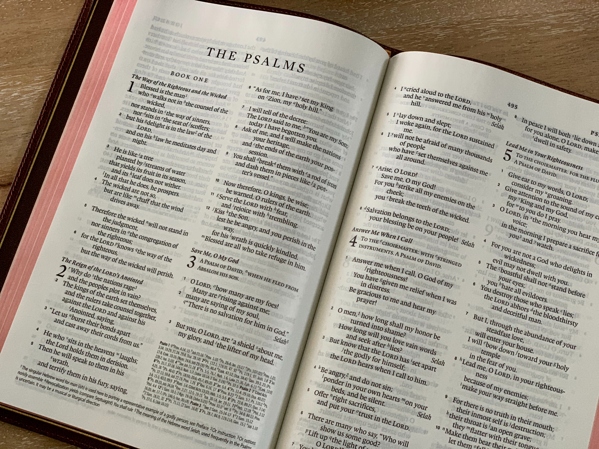

- 시편
- 잠언
- 전도서
시편

1편
복 있는 사람은 악인의 꾀를 따르지 아니하며,
죄인의 길에 서지 아니하며, 오만한 자의 자리에 앉지 아니하며,
오로지 주님의 율법을 즐거워하며, 밤낮으로 율법을 묵상하는 사람이다.
그는 시냇가에 심은 나무가 철따라 열매를 맺으며 그 잎이 시들지 아니함 같으니, 하는 일마다 잘 될 것이다.
그러나 악인은 그렇지 않으니, 한낱 바람에 흩날리는 쭉정이와 같다.
그러므로 악인은 심판받을 때에 몸을 가누지 못하며, 죄인은 의인의 모임에 참여하지 못한다.
그렇다. 의인의 길은 주님께서 인정하시지만, 악인의 길은 망할 것이다.
2편
어찌하여 뭇 나라가 술렁거리며, 어찌하여 뭇 민족이 헛된 일을 꾸미는가?
어찌하여 세상의 임금들이 전선을 펼치고, 어찌하여 통치자들이 음모를 함께 꾸며 주님을 거역하고, 주님과 그의 기름 부음 받은 이를 거역하면서 이르기를
"이 족쇄를 벗어 던지자. 이 사슬을 끊어 버리자" 하는가?
하늘 보좌에 앉으신 이가 웃으신다. 내 주님께서 그들을 비웃으신다.
마침내 주님께서 분을 내고 진노하셔서, 그들에게 호령하시며 이르시기를
"내가 나의 거룩한 산 시온 산에 '나의 왕'을 세웠다" 하신다.
"나 이제 주님께서 내리신 칙령을 선포한다. 주님께서 나에게 이르시기를 '너는 내 아들, 내가 오늘 너를 낳았다.
내게 청하여라. 뭇 나라를 유산으로 주겠다. 땅 이 끝에서 저 끝까지 너의 소유가 되게 하겠다.
네가 그들을 철퇴로 부수며, 질그릇 부수듯이 부술 것이다' 하셨다."
그러므로 이제, 왕들아, 지혜롭게 행동하여라. 세상의 통치자들아, 경고하는 이 말을 받아들여라.
두려운 마음으로 주님을 섬기고, 떨리는 마음으로 주님을 찬양하여라.
그의 아들에게 입맞추어라. 그렇지 않으면 그가 진노하실 것이니, 너희가, 걸어가는 그 길에서 망할 것이다. 그의 진노하심이 지체없이 너희에게 이를 것이다.
주님께로 피신하는 사람은 모두 복을 받을 것이다.